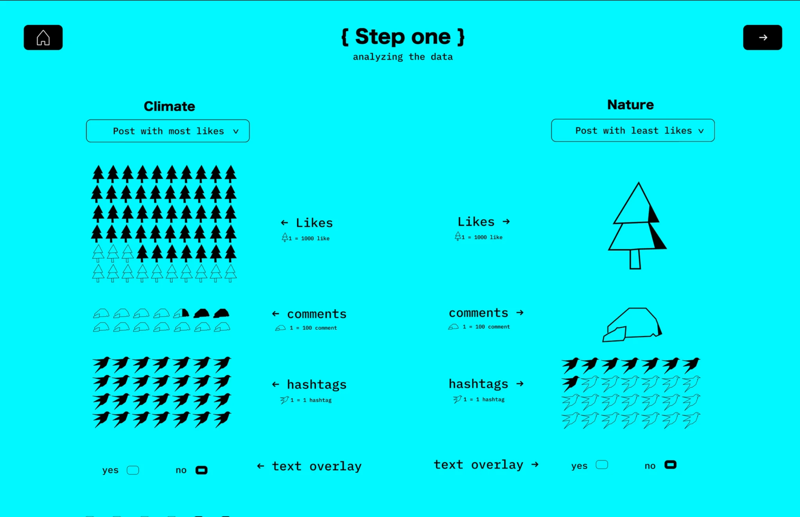
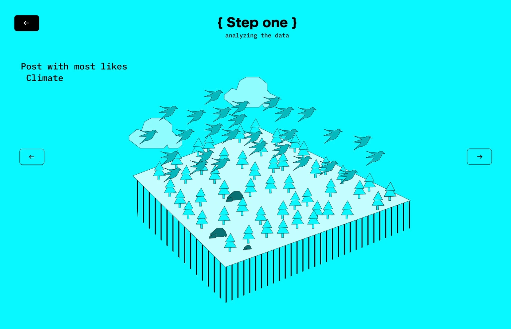
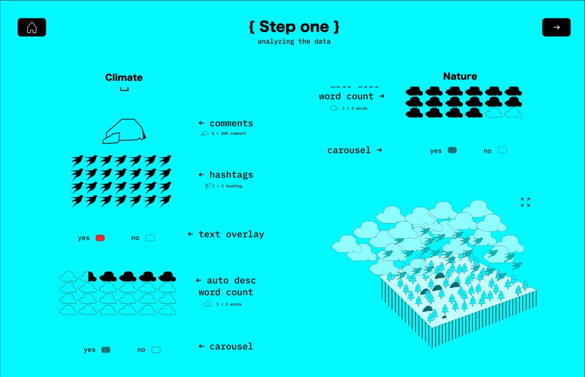
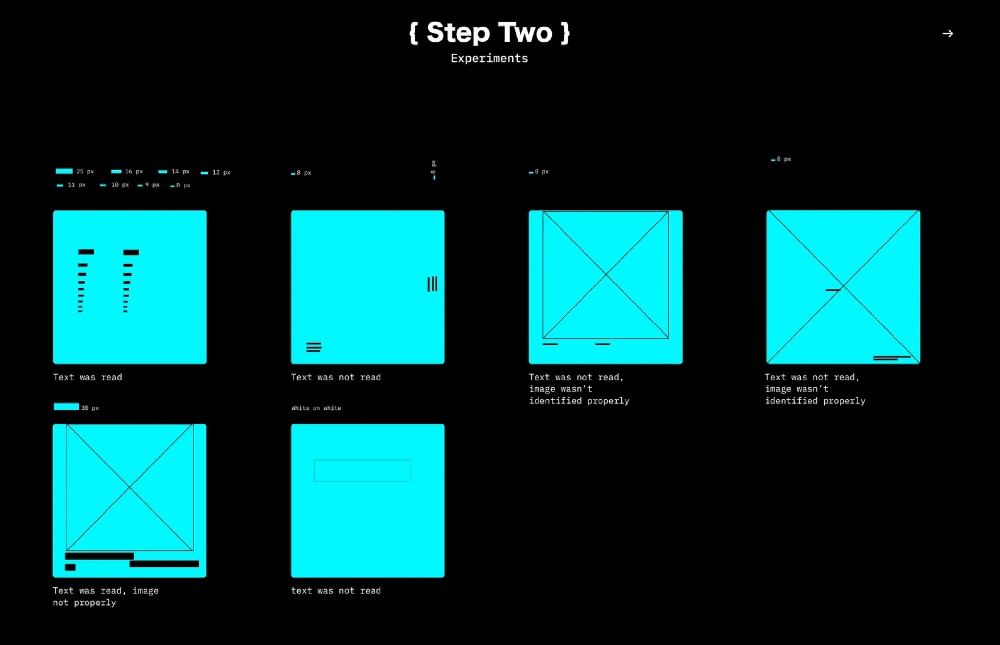
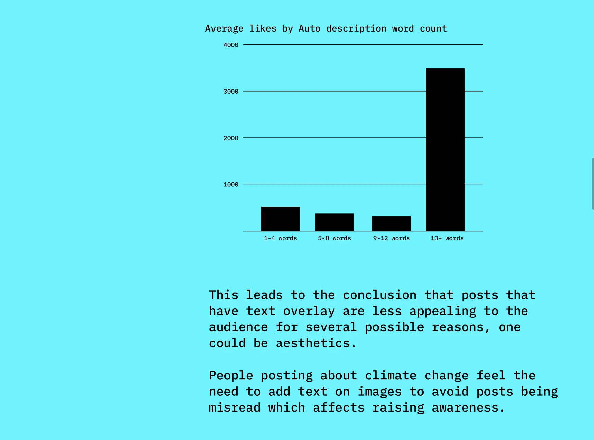
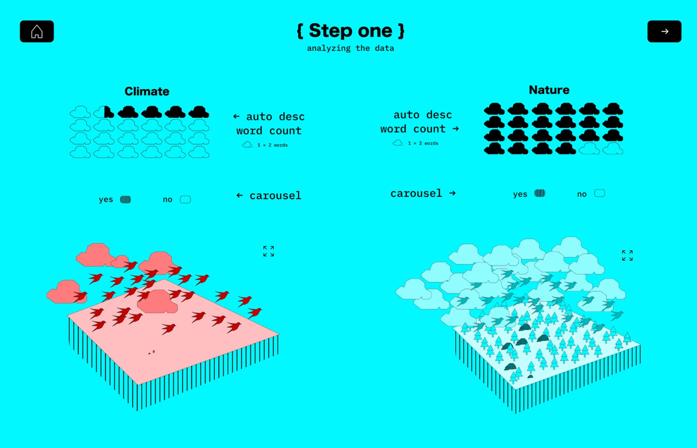
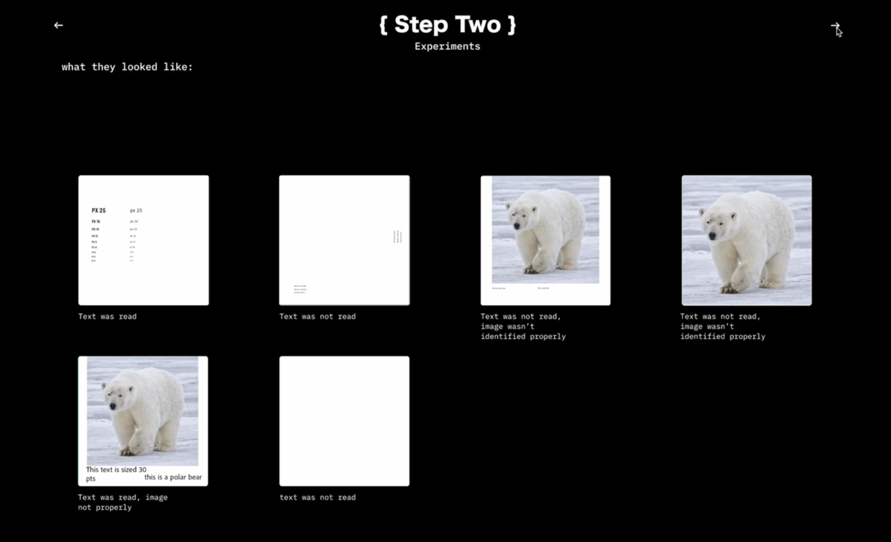

Contesting Algorithmic Vision
Alt-Text
This project is a documentation of process and experimentation of trying to further understand instagram’s auto alt-text description on posts. We analyzed the data given focusing on posts with text overlay affecting their engagement levels both for nature and climate dataset. To deepen the research further, we experimented with instagram’s auto description ability to read different kinds of texts on posts. We also presented a possible solution for a better outcome in terms of engagement and raising awareness on climate change related posts. The whole process was documented in a designed interactive medium.
Photo documentation
Documentation of the process, the group dynamic, material tests, and the final presentation.






